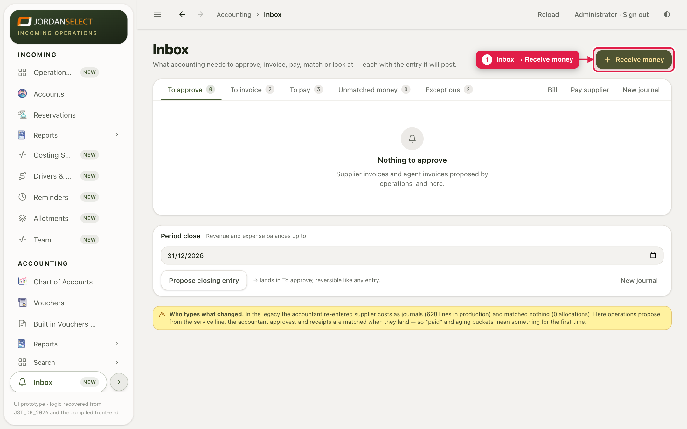
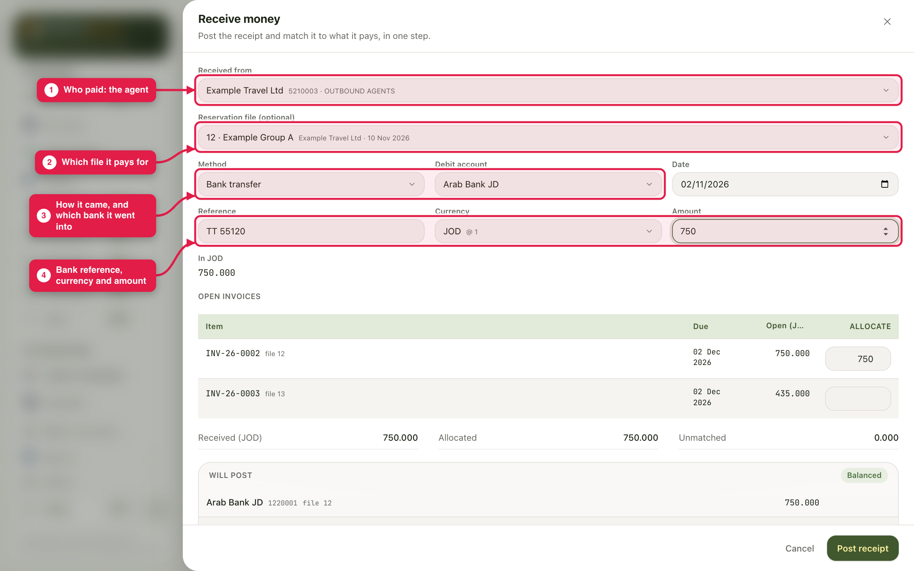
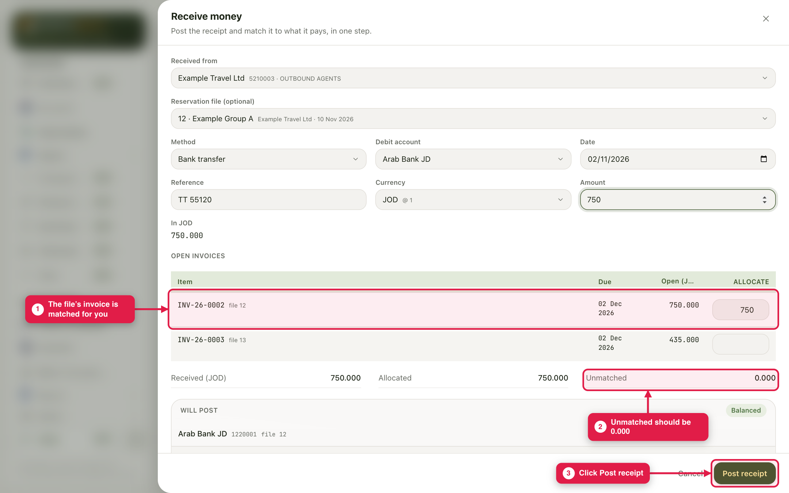
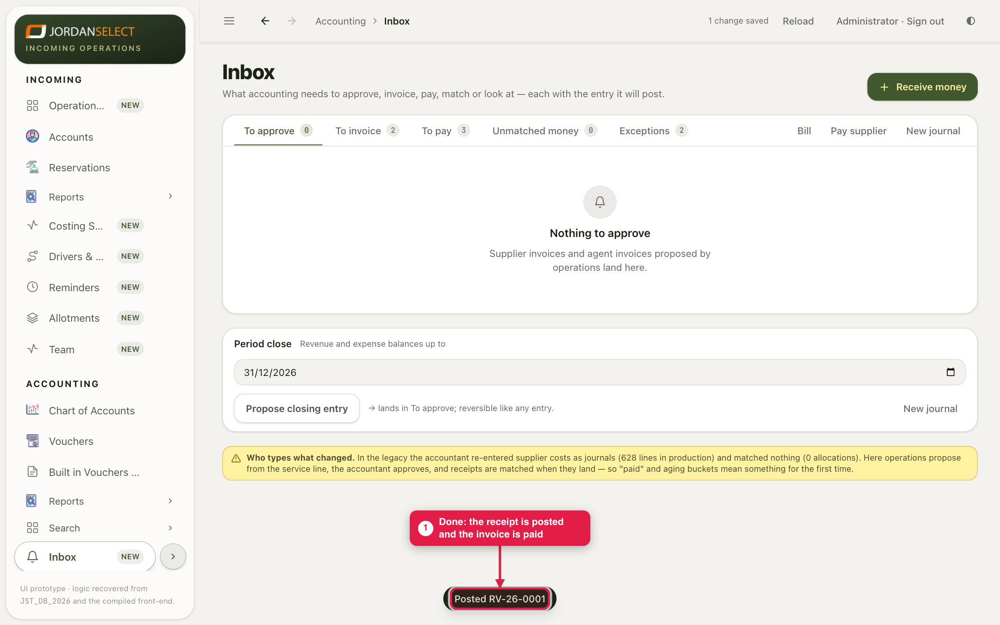

Money has arrived in the bank. Post the receipt and match it to the invoice it pays, in one step.
WhoAccountants
WhereAccounting → Inbox → Receive money
Takes1 to 2 minutes
You needThe bank advice: who paid, how much, the bank reference
Example in this guide: Example Travel Ltd paid 750.000 JOD by bank transfer into Arab Bank JD for file 12, reference TT 55120.
1. Open Receive money
1
Open Accounting → Inbox and click Receive money at the top right.

Receive money is also on an account’s Statement and on the file’s Finance tab.
2. Fill in the details
2
Received from: the agent who paid. Reservation file: the file the money is for. Choosing it lets the system match the money for you. Method and Debit account: how the money came, and the bank it went into. Reference, Currency and Amount: as on the bank advice.

The details filled in. In JOD shows the amount in dinars.
Choose the method before the bankPicking a method suggests a bank: Cash goes to the Cash account, a card to VISA. Check the Debit account after you choose the method.
3. Match it and post
3
Under Open invoices, the file’s invoice already has the amount in Allocate. Unmatched should be 0.000. Click Post receipt.

Matched in full. Will post at the bottom shows the entry.
4
The system confirms, for example “Posted RV-26-0001”. The invoice is now paid.

Done.
When it is not a perfect match
The situation
What to do
One payment for several invoices
Leave the file empty and type an amount next to each invoice in Allocate.
The agent paid less than the invoice
Allocate what came in. The rest of the invoice stays Open.
The agent paid more, or you do not know what it is for
Post it. The extra shows as Unmatched and waits in Inbox → Unmatched money until you match it.
Allocated more than was received
Post receipt stays greyed out. Lower the amounts in Allocate.
4. Check your work
The agent’s Statement shows the invoice as Paid and the receipt below it (guide 08).
Nothing new under Unmatched money, unless you meant it.
Questions? Ask the finance manager. · Last checked: ____ · Screens shown are from a test copy of the CRM with made-up data.